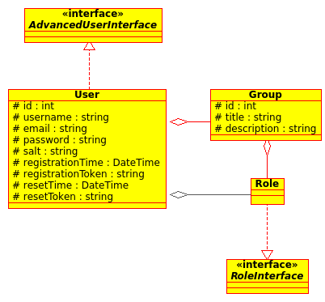

Roles and Groups¶
Roles are defined by instances of FOM\ManagerBundle\Component\Bundle using the getRoles method. The naming of roles follows the standard Symfony role naming scheme, where roles have to be prefixed with “ROLE_”.
Roles are used for global permission checks when no domain object is involved and can be used as security identities of Access Control Entries in Access Control Lists of domain objects.
Groups are database entities which can be assigned to users on an individual base. They also are assigned multiple roles. Therefore their primary use is to collect roles which are assigned to every user of that group.
Future¶
At a later point the possibility to assign individual roles directly to an user will also be implemented.
Also Symfony provides an API for hierarchical roles which has not yet been employed by the FOMUserBundle.